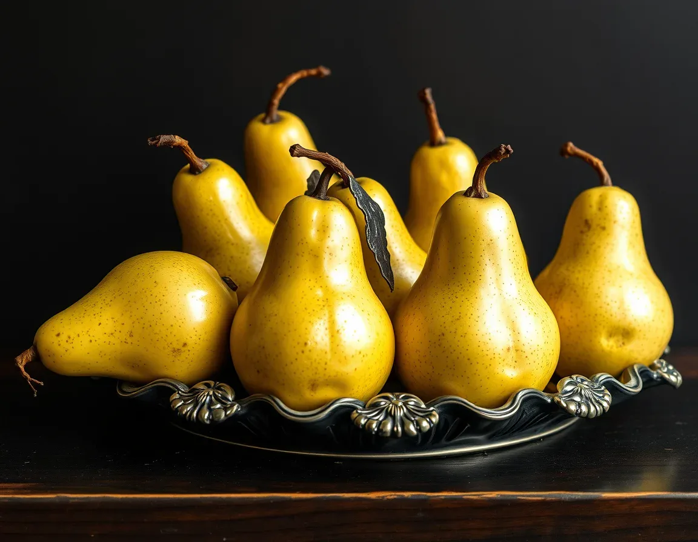
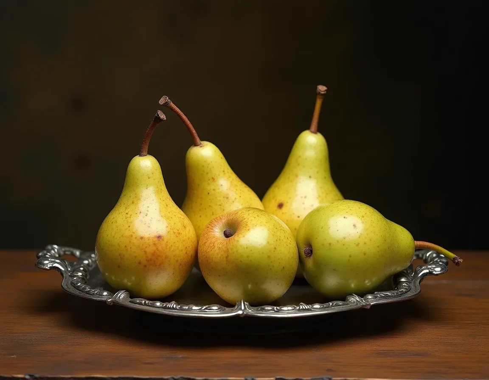
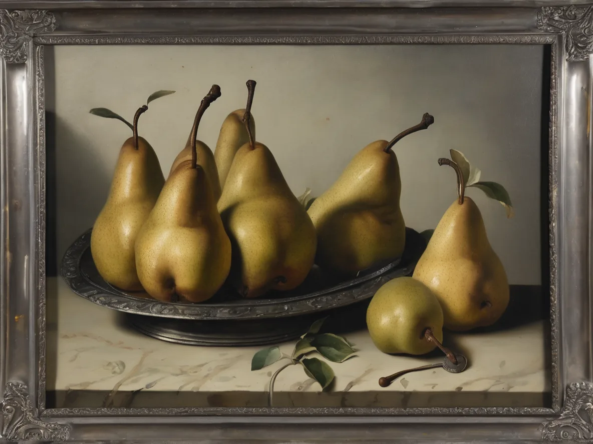
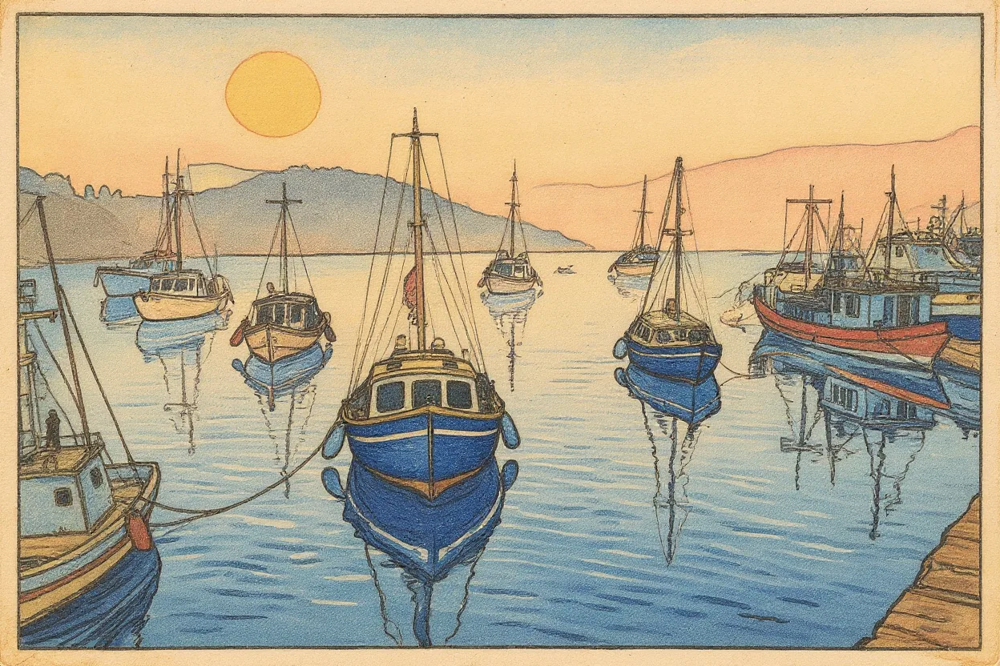
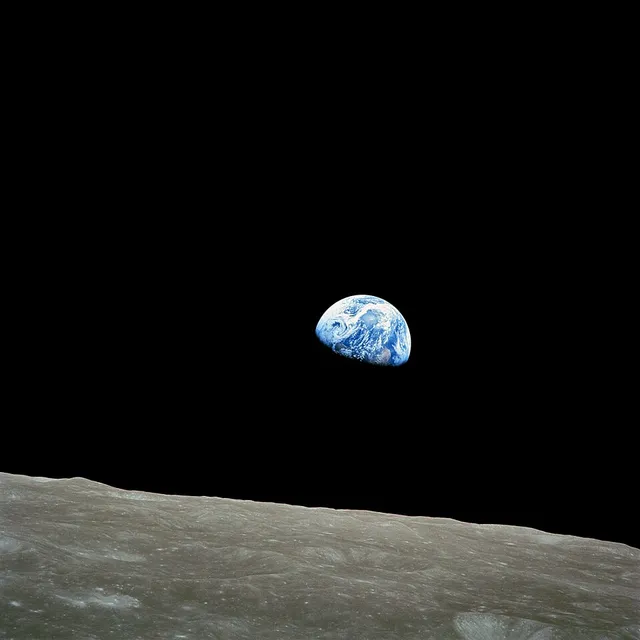
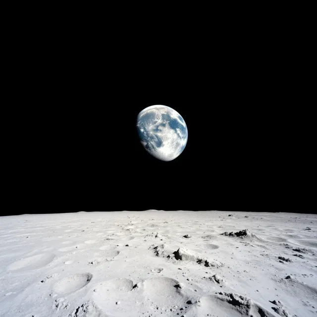
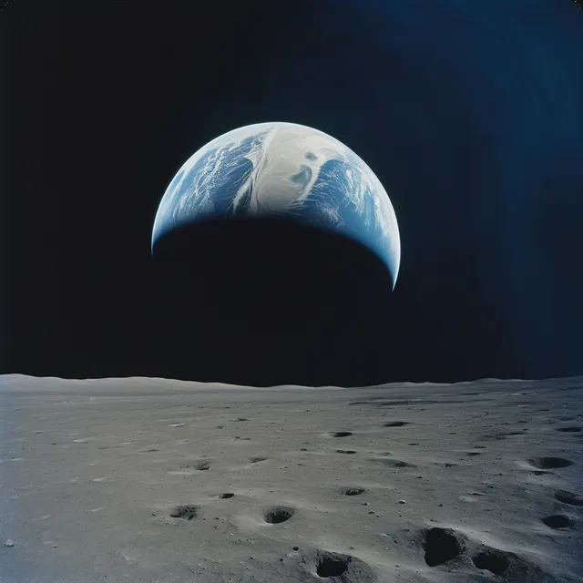

Real renders, real documents
Every image on this page was rendered once from the JAI document shown beside it and saved, so viewing the page needs no API key. Open "How this was rendered" under any image to see the exact text sent to the model.
A sentence is a complete image
No prefix, no settings. In a context that already says "this is JAI", such as a .jai file or a data-jai attribute, plain prose is a valid document.
A red bicycle leaning against a whitewashed wall, afternoon sun
How this was rendered
The renderer filled in everything the sentence left open: the cobblestones, the leaf shadows, the shutter. That is the trade JAI makes. You decide what matters and say it; the decoder invents the rest.
The same document, in the three forms a program can exchange:
A red bicycle leaning against a whitewashed wall, afternoon sun
{"jai":1,"prompt":"A red bicycle leaning against a whitewashed wall, afternoon sun"}
data:image/jai,A%20red%20bicycle%20leaning%20against%20a%20whitewashed%20wall,%20afternoon%20sunSame description, different style
Only the style setting changes between these three documents. The renderer, model and seed are the same, which is why the composition holds while the medium changes.
jai:A lighthouse on a cliff in a storm;style=watercolorHow this was rendered
jai:A lighthouse on a cliff in a storm;style=animeHow this was rendered
jai:A lighthouse on a cliff in a storm;style=35mm film photo;style=grainyHow this was rendered
One document, three renderers
The document says it prefers a FLUX model, then SDXL. Preferences are advisory: the reader's viewer chooses among the renderers its user has configured. Here the same document went to three of them.
jai:A still life of pears on pewter, Dutch golden age;model=flux;model=sdxl;aspect=4:3
How this was rendered

How this was rendered

How this was rendered
Note how each renderer read "Dutch golden age" differently. A JAI document fixes the intent, not the pixels. A model value is only ever matched against renderers the reader has set up; it never makes a viewer download or run anything.
Restyle the image already on the page
With mode=transform the page's own image becomes an input. strength says how far the result may move away from it: 0 keeps it, 1 ignores it.
jai:Photograph of fishing boats in a small harbour at dawn, mist on the water, warm low sun;aspect=3:2How this was rendered
jai:The same harbour scene as a pencil sketch on cream paper;mode=transform;strength=0.7How this was rendered

jai:The same harbour scene as a Japanese ukiyo-e woodblock print;mode=transform;strength=0.8How this was rendered
The markup
<picture>
<source type="image/jai"
srcset="data:image/jai,The%20same%20harbour%20scene%20as%20a%20pencil%20sketch%20on%20cream%20paper;mode=transform;strength=0.7">
<img src="harbour.webp" alt="Fishing boats moored in a misty harbour at dawn" crossorigin="anonymous">
</picture>A viewer may only send pixels the page itself could read: same-origin images, or images served with CORS (hence crossorigin). It never uses the reader's cookies to fetch someone else's picture and send it to a provider.
From a photograph to 465 bytes
An encoder runs the decoder inside the loop: a vision model describes the image, the target models render the description, the renders are scored against the original, and the description is revised. This is NASA's Earthrise, taken by Bill Anders on Apollo 8 (public domain), encoded for FLUX.1 schnell and Stable Diffusion XL with the reference encoder in jai-tools.



The encoded document
jai:A wide-angle photograph from the moon's surface, showing a gibbous Earth, blue and white with swirling clouds, appearing as a crescent. The Earth is approximately one-seventh of the frame width, placed just left of the central vertical axis and about two-fifths of the way down from the top, glowing against the absolute blackness of space which fills the upper three-fifths. The lower two-fifths of the frame features the detailed, light grey, rocky lunar terrain, extending from the bottom edge to a sharp, straight horizon line.;prompt/flux=Ensure the Earth is the central subject, clearly distinct from the light grey, gently rolling lunar surface.;aspect=1:1;model=black-forest-labs/flux-schnell;model=stability-ai/sdxl;style=documentary photographyThe model list is ordered by how well each model reproduced the original. The refinement after prompt/flux= reaches FLUX models only; every other model gets the core description. Download the .jai file (465 bytes, gzip JSON) or the full report with every candidate and score.
The run used Gemini 2.5 Flash to describe, revise and rate, and CLIP embeddings plus a thumbnail colour and layout distance to score. It made 40 renders in about eight minutes for an estimated $0.38. The score blends those measures with the vision model's rating, which is noisy, so the encoder re-rates the current best alongside every new generation. Fidelity is bounded by the decoders: neither model reliably draws a small Earth where it is asked to. The rate, a few hundred bytes, does not change when the decoders get better; the distortion does.
What this run got wrong. The refinement is phrased as an instruction ("Ensure…"), which the specification now rules out: refinements describe the picture, like the core. The core also says "from the moon's surface", while Earthrise was taken from lunar orbit. The encoder's prompts were corrected after review; a rerun with them plateaued at a lower score, which says as much about run-to-run variance with one seed as about the prompts. Scores measure resemblance, not truth.
What a reader sees, step by step
A JAI-aware viewer shows the original image (or a tiny placeholder) while a render is on its way, swaps in the render, and keeps the original one click away. Choose a scenario and press Render. This demo plays back saved images; nothing is sent anywhere.